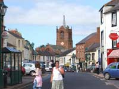
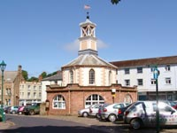
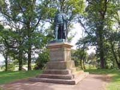
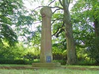
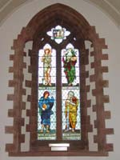
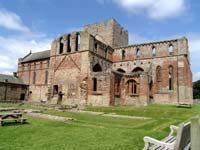

Brampton Tourist Information

{kind=link}
It is a location rich in the history of the Roman occupation, border raiders, and the Jacobite uprisings.
Sections of the 73 mile long Hadrians Wall stand nearby. Visitors can see the remains of one of the frontier fortifications (52a) and the Birdoswald Roman Fort, together with the Visitor Centre which details the Roman connections and the border raids of the later years.

{kind=link}
Bonnie Prince Charlie established his headquarters in one of the town's several other old buildings, and it was from here that he received the keys to Carlisle on its surrender to his besieging army in 1745.

George William Frederick Howard, 7th Earl of Carlisle (April 18, 1802 - December 5, 1864), was a British politician and statesman.
He earned a reputation as a scholar and writer of graceful verse, obtaining in 1821 both the chancellor's and the Newdigate prizes for a Latin and an English poem.
In 1826 he accompanied his uncle, the Duke of Devonshire, to Russia, to attend the coronation of Tsar Nicholas I, and became a great favorite in society at St Petersburg.
{kind=link}

{kind=link}

{kind=link}
Talkin Tarn Country Park, with it’s 10,000 year old glacial lake, is a 150 acre recreational area. The tarn, up to 40 feet deep, is ideal for canoeists, sailing, windsurfing, rowing-boats, and, in season, fishing. A path around the water has wheel-chair access.
An R.S.P.B. maintained nature-reserve, in the Kings Forest of Geltsdale, is a sanctuary for resident and migratory birds, where, in addition to the wildlife, is a stone bearing an inscription carved by a Roman soldier.

{kind=link}
Not too distant is the village of Bewcastle, with it’s very fine example of an Anglo-Saxon Cross standing in the churchyard.
This border region of Brampton has much to offer walkers, hikers, cyclists and bird-watchers. The towns shops and facilities have something for everyone, and the accommodation in and around the town is of the highest standard.
How to get there:
By rail: From the London to Glasgow West Coast Main Line, change at Carlisle for Brampton.
Brampton is on the Tyne Valley Line.(Carlisle-Newcastle)
By road: Exit J43 of the M6, and follow the A69 for Brampton.
If travelling by bus,
an hourly service (2 hourly on Sundays ) travels between Newcastle and Carlisle.
Also, there is a Hadrian's Wall bus from May to September.
Attractions in Brampton |
Hadrians Wall
No trip to the area would be complete without a visit to Hadrian's Wall, a mighty fortification built to mark the boundary of Rome's Empire. Constructed between AD120 and 128 the wall was over 73 miles long from coast to coast and stood six metres high.
From Brampton, wall fortifications can be seen at Banks East Turret and Pike Hill Signal tower or you can visit the secluded Milecastle at Gilsland's Poltross Burn. The Roman Army Museum and Birdoswald Roman Fort offer the opportunity to step back in time and see what the archeological digs have revealed.
Phone: +44 (0)16977 47602
Lanercost Priory
Founded in 1166 by Robert de Vaux and running alongside Hadrians Wall, Lanercost Priory has seen many raids over the centuries due to its close proximity to Scotland.
Although most of the site is in ruins, it serves as as a Parish Church.
The Priory ruins are cared for by English Heritage and are open from 10.00am to 6.00pm April to October.
Phone: +44 (0)1697 73030
Talkin Tarn Country park
Talkin Tarn Country park sits in 120 acres of woodland and farmland. It is an ideal place to relax and enjoy the countryside.
Events are held throughout the year.
Phone: +44(0)16977 3129
Birdoswald Roman Fort
Stands in one of the most picturesque positions on the Wall and comprises a fort and turret. Comfortable tea room and visitor centre.
www.english-heritage.org.uk for opening times and prices.
Solway Aviation Museum
Phone: 01228 573823
Brampton Golf Club
Brampton's golf club has been described as "the jewel of Cumbria" and it's undulating course allows you to take in some breathtaking views as you play.
Phone: 016977 2255 & 2000
Cycling
Brampton is on the route of the Cumbria Cycle Way and with endless quiet country lanes passing through sleepy lanes it's the perfect place to explore on two wheels. If you prefer a slightly more challenging route then there are many demanding tracks across the fells (all marked on OS maps) which unwind to reveal some spectacularly breathtaking scenery.
Cycle hire:
Pedalpushers Cycle Hire Phone: +44 (0)16977 42387
Bentley's Border Bikes: Phone +44 (0)16977 2458)
Cycling Hadrians Wall Country
Phone: 01476 581111
The Reivers Cycle Route
Phone: 01228 625600
Hadrians Cycleway from Ravenglass to Tynemouth. www.nationalcyclenetwork.org.uk
Walks in an ancient Wood
Phone: 01697 73433
Solway coast Area of Outstanding Natural Beauty
Phone: 01697 333055
Food and Drink in Brampton |
The White Lion Hotel
Town centre hotel incorporating a recently refurbished restaurant and bar.
Excellent menu choice and varied wine list.
Phone: 016977 2338
Huntingtons Wine Bar
Open Wednesday to Saturday from 5pm. Serving continental cuisine. Children welcome. Reservations advised.
Phone: 016977 3481
The Weary Sportsman Inn
Recently refurbished 17th century coaching inn with an extensive choice of excellent dishes. A fine choice of wine is available to compliment your meal.
Phone: 01228 670230
Transportation in Brampton |
Brampton Cars
Phone: 01697 73386